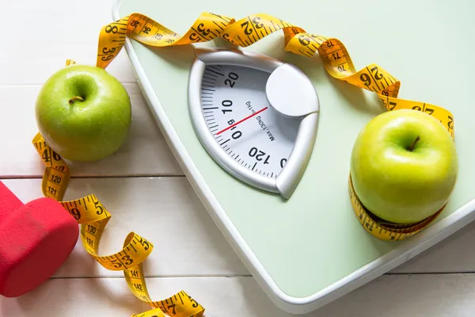

Kişiye özel beslenme planları, gelişmiş sağlık hesaplamaları ve profesyonel danışmanlık yaklaşımıyla yaşam kalitenizi yükseltin.
Bilimsel temelli araçlarımızla sağlığınızı kontrol altına alın.
Kilo yönetimi, obezite değerlendirmesi ve sağlıklı yaşam konusunda en çok merak edilen soruların yanıtlarını keşfedin.
Bel çevresi ölçümü, karın bölgesindeki yağlanmanın değerlendirilmesinde önemli bir göstergedir. Ölçüm doğru noktadan ve uygun şekilde yapılmalıdır.
Obezite, vücutta sağlığı olumsuz etkileyebilecek düzeyde aşırı yağ birikmesi durumudur. Düzenli değerlendirme ve doğru beslenme planı önem taşır.
Evet, kişiye uygun beslenme düzeni ve sürdürülebilir yaşam alışkanlıklarıyla kilo vermek mümkündür. Sürecin doğru yönetilmesi kalıcılık açısından önemlidir.
Kalıcı sonuçlar için yalnızca kilo vermek değil, yeni yaşam düzenini korumak da gerekir. Dengeli beslenme ve takip süreci bu noktada belirleyici olur.
Değerlendirme; boy, kilo, bel çevresi, vücut kitle indeksi ve bazı ek ölçümlerle birlikte kişinin genel sağlık durumuna göre yapılır.
VKİ, bel çevresi ölçümü, yağ oranı değerlendirmesi ve diğer antropometrik ölçümler, kilo yönetimi sürecinde sık kullanılan yöntemler arasındadır.

Bulunduğunuz il ve ilçeye göre nöbetçi eczanelere hızlıca ulaşın. Güncel bilgileri resmi sorgu ekranı üzerinden görüntüleyebilirsiniz.
Not: İl, ilçe ve tarih seçimini resmi ekran üzerinden tamamlayabilirsiniz.
“Sağlıklı yaşamı birlikte sürdürülebilir hale getirelim. Kendini iyi hissettiğin bir beden için doğru adımı bugün at.” ✨
Online danışmanlık, yüz yüze görüşme ve detaylı değerlendirme için bizimle iletişime geçin.
Randevu Oluştur